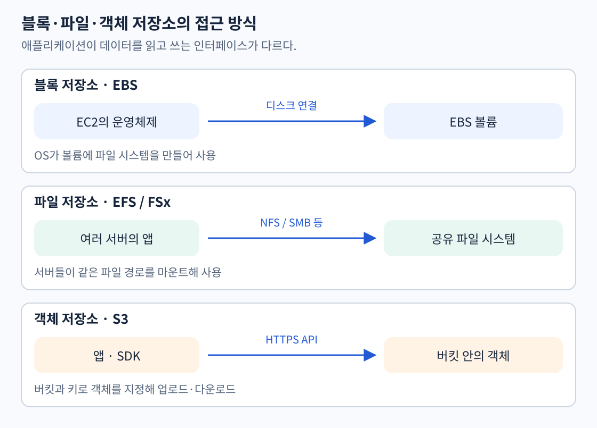
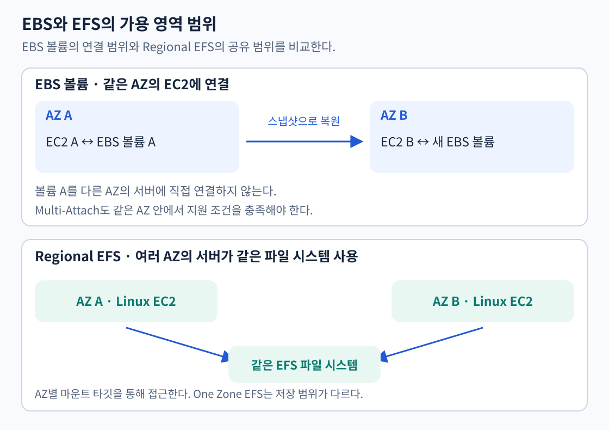
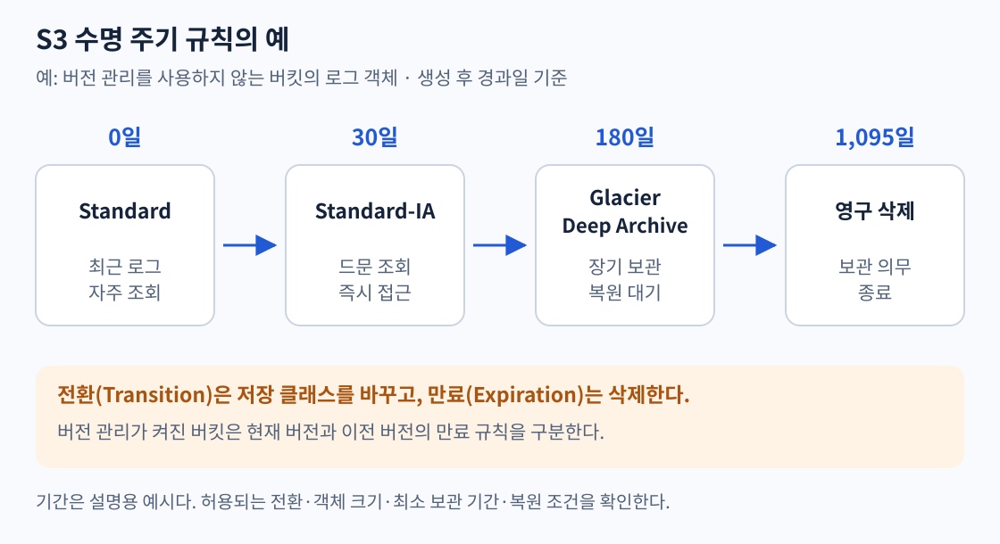

| 시간 | 내용 |
|---|---|
| 0~15분 | 블록·파일·객체 저장소의 차이 |
| 15~30분 | S3 버킷·키·버전 관리 |
| 30~45분 | EBS 볼륨·스냅샷·성능 유형 |
| 45~60분 | EFS와 FSx, 여러 서버의 파일 공유 |
| 60~75분 | S3 저장 클래스·복원 대기·수명 주기 |
| 75~90분 | 사용 예와 복습 |
웹 서버가 사용하는 디스크, 여러 서버가 공유하는 파일 경로, 사용자가 업로드한 이미지의 저장 방식은 다르다.

| 방식 | 앱에서 사용하는 형태 | 대표 서비스 | 사용 예 |
|---|---|---|---|
| 블록 | OS에 연결한 디스크 위에 파일 시스템·DB 등을 구성 | EBS | EC2 부팅 디스크, 단일 서버 DB 데이터 |
| 파일 | 네트워크로 마운트한 파일·디렉터리 | EFS, FSx | 여러 서버의 공통 파일 경로 |
| 객체 | 버킷과 키를 지정하는 API | S3 | 이미지·문서·로그·백업 객체 |
앱이 기존 파일 시스템 경로를 요구하면 파일 저장소를, EC2의 부팅 디스크가 필요하면 블록 저장소를 검토한다. 이미지 업로드·다운로드처럼 객체 API로 처리하는 데이터는 S3에 저장할 수 있다.
버킷은 객체를 담는 컨테이너다. 객체는 데이터와 메타데이터로 구성되고, 키는 버킷 안에서 객체를 식별하는 이름이다.
| 구성 | 예 |
|---|---|
| 버킷 | example-study-images |
| 객체 키 | uploads/2026/cat.jpg |
| 객체 데이터 | 실제 이미지 내용 |
uploads/2026/은 일반적인 S3 버킷에서 키의 접두사(prefix)다. 콘솔에서 폴더처럼 보여도 일반 파일 시스템의 디렉터리와 동일하게 동작하는 것은 아니다. 앱은 SDK나 HTTPS API로 객체를 읽고 쓴다.
S3 객체는 EC2의 디스크가 아니므로 EC2를 중지하거나 종료해도 함께 삭제되지 않는다. S3의 삭제 요청이나 수명 주기 규칙 등으로 별도 관리한다. 여러 앱이 같은 객체에 접근할 수 있지만, 이것이 여러 서버가 동일한 POSIX 파일 시스템을 마운트한다는 뜻은 아니다.
출처: S3 동작 방식
일반 목적 버킷에서 버전 관리를 켜면 같은 키에 새 객체를 써도 이전 버전을 보존한다. 버전 ID를 지정하지 않은 일반 삭제는 삭제 마커를 추가하므로 이전 버전을 영구 삭제하는 것과 다르다. 특정 버전의 영구 삭제는 별도 작업이다.
각 버전은 차이만 저장하는 방식이 아니라 전체 객체로 과금된다. 버전 관리가 켜진 버킷은 다시 미설정 상태로 돌아가지 않고 일시 중지할 수 있다. 오래된 버전의 비용은 별도 수명 주기 규칙으로 관리한다.
출처: S3 버전 관리
일반 목적 S3 버킷은 성공한 PUT·DELETE 이후 객체 읽기와 목록 조회에 강한 일관성을 제공한다. 여러 객체를 한꺼번에 갱신하는 DB 트랜잭션이나 파일 잠금을 대신하는 것은 아니다.
큰 파일은 멀티파트 업로드로 나누어 병렬 전송하고 실패한 파트만 다시 보낼 수 있다. 모든 파트가 올라간 뒤 완료 요청으로 객체를 구성한다. 시작만 하고 끝내지 않은 파트도 보관 비용이 생기므로 중단하거나 수명 주기로 불완전 업로드를 정리한다. 작은 객체를 무조건 수많은 요청으로 나누기보다 파일 크기·병렬도·요청 요금을 함께 검토한다.
장거리에서 한 버킷으로 업로드하는 사용자는 Transfer Acceleration을 검토할 수 있다. 엣지 위치에서 최적화된 경로로 S3에 전송하며 추가 비용과 실제 전송 성능을 비교한다. 이미지를 사용자 가까이 캐싱해 내려주는 CloudFront와 목적이 다르다.
Requester Pays는 인증된 요청자가 요청·다운로드 전송 비용을 부담하도록 하는 기능이다. 저장 비용은 버킷 소유자에게 남는다. 연구 데이터를 다른 계정과 공유할 때 사용 비용의 부담 주체를 나누는 예이며, 접근 권한을 자동으로 부여하는 기능은 아니다.
출처: S3 일관성, 멀티파트 업로드, Transfer Acceleration, Requester Pays
작은 로그 천 개를 각각 저장하는 것과 시간대별 파일로 합쳐 저장하는 것은 비용과 조회 방식이 다르다. 합치면 객체별 요청·전환·메타데이터 비용과 분석 시 작은 파일을 여는 부담을 줄일 수 있다. 대신 로그 한 건만 수정하거나 내려받기 어려워지고 묶음 처리 지연이 생긴다. 집계 단위와 압축·Parquet 같은 형식은 조회 조건에 맞춘다. 여러 작은 객체를 합치는 집계와 큰 객체 하나를 나누어 보내는 멀티파트 업로드는 반대 방향의 작업이다.
현재 데이터가 100GB이고 하루 2GB씩 늘며 30일간 삭제하지 않는다면, 30일 뒤 논리 데이터는 160GB다. 여기에 버전·복제본·백업·메타데이터와 운영 여유를 별도 계산한다. EBS는 프로비저닝한 용량을, S3·EFS는 실제 저장량과 요청·접근 비용을 함께 검토한다. 보존 기간이 길어지면 원본 크기만으로 예산을 잡을 수 없다.
출처: 작은 S3 객체 집계의 비용·성능, S3 비용 구성
S3 신규 업로드는 기본 서버 측 암호화가 적용된다. SSE-S3는 S3가 키를 관리하고, SSE-KMS는 KMS 키 정책과 사용 권한을 함께 관리한다. 암호화 설정을 바꿨다고 이전 객체가 자동으로 모두 재암호화되지는 않는다. 저장 암호화와 HTTPS 전송 암호화, 버킷 공개 여부도 각각 구분한다.
SRR은 같은 리전, CRR은 다른 리전으로 객체를 비동기 복제한다. 라이브 복제는 규칙 설정 이후의 대상 객체에 적용하고 기존 객체에는 Batch Replication 등을 사용한다. 버전 관리·역할·키 권한 등 구성 조건을 확인한다. 복제는 다른 위치의 사본이고 특정 과거 시점 복구와 동일하지 않다.
Object Lock은 버전 관리가 켜진 버킷에서 객체 버전을 WORM 방식으로 보호한다. Governance는 특별한 권한으로 우회할 수 있지만 Compliance는 보존 기간 중 보호된 버전을 루트 사용자도 삭제할 수 없다. Legal hold는 명시적으로 해제할 때까지 적용된다. 새로운 버전이나 삭제 마커 생성까지 모두 금지하는 기능으로 해석하지 않는다.
청구 자료를 장기간 보관한다면 비용만 보고 만료 규칙을 적용하지 않는다. 데이터 분류·법적 보존 기간·접근 권한·삭제 방지를 먼저 정하고 클래스와 만료를 구성한다.
출처: S3 암호화, 객체 복제, Object Lock
EBS 볼륨은 EC2에 연결하는 블록 저장소다. OS는 연결된 볼륨을 디스크처럼 사용한다. EBS 루트 볼륨으로 부팅하거나 추가 볼륨에 앱 데이터를 저장할 수 있다.
EC2 중지 후에도 볼륨의 데이터와 저장 요금은 남는다. EC2 종료 시에는 DeleteOnTermination 설정에 따라 볼륨이 삭제되거나 유지된다. 서버의 실행 상태와 디스크 삭제 설정을 구분한다.
볼륨은 특정 AZ에 생성하며 같은 AZ의 EC2에 연결한다. 다른 AZ에서 사용하려면 스냅샷을 이용해 그 AZ에 새 볼륨을 만든다.
출처: EBS 개요, 2일 차: 인스턴스 상태와 데이터
IOPS는 초당 입출력 작업 수, 처리량은 초당 전송하는 데이터 양이다. 작은 데이터를 자주 읽고 쓰는 DB와 큰 파일을 순차적으로 읽는 작업은 요구하는 성능이 다르다.
| 볼륨 유형 | 특성 | 대표 용도 |
|---|---|---|
| gp3·gp2 | 범용 SSD | 부팅 디스크, 일반 앱·개발 환경 |
| io2·io1 | 프로비저닝한 IOPS를 사용하는 SSD | 높은 IOPS와 일정한 지연이 필요한 DB |
| st1 | 처리량 최적화 HDD | 큰 데이터를 순차적으로 읽고 쓰는 작업 |
| sc1 | 접근 빈도가 낮은 HDD | 드물게 읽는 대용량 데이터 |
HDD 기반 st1·sc1은 부팅 볼륨으로 사용하지 않는다. gp3는 용량과 성능을 별도로 조정할 수 있다. 볼륨 성능을 높여도 EC2 측 EBS 대역폭 등 다른 제한을 넘을 수는 없다.
지원되는 EBS 볼륨은 Elastic Volumes로 용량·유형·성능을 조정한다. 볼륨 용량을 늘린 뒤 OS의 파티션·파일 시스템도 확장해야 실제로 사용할 수 있다. 기존 볼륨 크기를 줄이는 기능은 아니므로 축소는 새 볼륨으로 데이터를 옮기는 방식 등을 검토한다.
출처: EBS 볼륨 유형, Elastic Volumes 변경
스냅샷은 특정 시점의 볼륨 백업이다. 이후 스냅샷은 변경된 블록을 저장하는 증분 방식이지만, 각 스냅샷으로 해당 시점의 새 볼륨을 복원할 수 있다. 필요한 스냅샷을 직접 만들거나 자동 생성 정책을 설정해야 한다.
스냅샷은 볼륨과 독립적으로 유지되고, 같은 리전의 다른 AZ에도 새 볼륨을 복원할 수 있다. 다른 리전에는 스냅샷을 복사한 뒤 복원한다. 데이터는 AWS가 관리하는 S3에 저장되며 사용자의 S3 버킷 목록에서 직접 열어보는 객체는 아니다.
출처: EBS 스냅샷
io1·io2는 조건에 맞는 같은 AZ의 여러 EC2에 하나의 볼륨을 연결하는 Multi-Attach를 지원한다. 일반적인 EBS 볼륨 사용과 구분한다.
공유 블록 장치를 여러 서버에 연결했다고 파일 동시 수정이 자동으로 안전해지지는 않는다. 클러스터 파일 시스템과 동시 쓰기를 조정하는 앱 설계 등이 필요하다. 여러 AZ의 Linux 서버에서 일반적인 공유 파일 경로가 필요하다면 EFS를 검토한다.
출처: EBS Multi-Attach
EFS는 NFS로 접근하는 관리형 파일 저장소다. Linux 서버 여러 대가 동일한 파일 시스템을 마운트해 공통 경로를 사용할 수 있다. EC2 외에 지원되는 컨테이너 환경과 Lambda 등에서도 사용한다.
예를 들어 웹 서버가 여러 대이고 기존 앱이 업로드 파일을 /shared/uploads에서 읽는다면, 각 서버에서 같은 EFS를 마운트하는 구성을 검토할 수 있다. 파일이 한 서버의 EBS에만 있으면 다른 서버가 같은 경로를 사용해도 같은 파일을 보는 것은 아니다.
EFS는 파일 추가·삭제에 따라 저장 용량이 늘고 줄어든다. 여러 앱의 동시 수정은 파일 잠금과 NFS 동작을 고려해야 한다.

Regional EFS는 데이터를 여러 AZ에 저장한다. 일반적으로 서버가 있는 AZ의 마운트 타깃을 통해 파일 시스템에 접근한다. One Zone EFS는 한 AZ에 데이터를 저장하므로 해당 AZ의 물리적 손실에 대한 내성이 다르다.
서버 여러 대가 접속할 수 있다는 사실과 데이터가 여러 AZ에 저장된다는 사실은 구분한다. EFS라는 이름만 보고 모든 유형의 저장 범위가 같다고 판단하지 않는다.
출처: EFS 파일 시스템 유형, 마운트 타깃
FSx는 파일 시스템별로 서비스를 제공한다. Windows 전용 서비스 하나를 가리키는 이름이 아니다.
| 서비스 | 주요 기능·접근 방식 | 검토할 요구사항 |
|---|---|---|
| FSx for Windows File Server | SMB, Windows 파일 시스템, Active Directory 연동 | 기존 Windows 파일 서버와 공유 폴더 이전 |
| FSx for Lustre | 고성능 병렬 파일 시스템, S3 데이터 연계 | HPC·머신러닝·대규모 병렬 처리 |
| FSx for NetApp ONTAP | ONTAP 기능, 파일·블록 프로토콜 | 기존 NetApp 환경과 데이터 관리 기능 유지 |
| FSx for OpenZFS | NFS, ZFS 스냅샷·클론 | 기존 ZFS·Linux 파일 서버 환경 이전 |
Lustre는 scratch와 persistent의 데이터 보호 방식이 다르다. scratch는 임시 처리용이고 파일 서버 장애 시 데이터가 유지되지 않을 수 있다. 모든 FSx 유형이 같은 프로토콜·배포 범위·복제 방식을 제공하는 것은 아니다.
출처: Windows File Server, Lustre, ONTAP, OpenZFS
저장 클래스는 보관 비용, 조회 비용, 접근 지연, AZ 범위를 함께 비교한다.
| 클래스 | 용도 | 접근·보관 특성 |
|---|---|---|
| Standard | 자주 읽는 데이터 | 즉시 접근, 여러 AZ |
| Standard-IA | 오래 보관하고 드물게 조회 | 즉시 접근, 조회 비용, 여러 AZ |
| One Zone-IA | 재생성 가능한 드문 조회 데이터 | 즉시 접근, 조회 비용, 단일 AZ |
| Intelligent-Tiering | 조회 패턴이 불규칙하거나 변함 | 객체별 접근 계층 자동 조정 |
| Glacier Instant Retrieval | 드물게 읽지만 빠른 조회 필요 | 밀리초 접근, 조회 비용 |
| Glacier Flexible Retrieval | 복원을 기다릴 수 있는 아카이브 | 복원 요청 필요, 분~시간 단위 |
| Glacier Deep Archive | 장기 보관, 긴 복원 대기 허용 | 복원 요청 필요, 시간 단위 |
| Express One Zone | 지연에 민감한 고성능 객체 접근 | 단일 AZ, 디렉터리 버킷 |
IA는 드물게 접근한다는 뜻이다. Standard-IA·One Zone-IA는 최소 보관 과금 기간이 30일, Glacier Instant·Flexible Retrieval은 90일, Deep Archive는 180일이다. 더 일찍 삭제·전환하면 남은 기간에 대한 요금이 발생할 수 있다.
One Zone-IA와 Express One Zone은 단일 AZ이므로 해당 AZ의 손실까지 대비하는 다중 AZ 저장과 구분한다.
출처: S3 저장 클래스 비교
접근 패턴을 관찰해 저장 클래스 내부의 접근 계층을 자동 조정한다. 모니터링·자동화 비용을 함께 고려한다. 128KB 미만 객체는 자동 계층 이동 대상이 아니다.
기본 접근 계층은 즉시 조회하지만 선택적으로 활성화하는 Archive Access·Deep Archive Access는 복원이 필요하다. “Intelligent-Tiering은 모두 즉시 조회된다”거나 “사용하면 모든 객체가 자동 아카이브된다”로 외우지 않는다.
Glacier라는 이름이 붙었다고 모두 복원을 기다리는 것은 아니다. Instant Retrieval은 즉시 접근한다. Flexible Retrieval과 Deep Archive는 복원 요청을 보내고 완료를 기다려야 한다.
Flexible Retrieval·Deep Archive의 복원은 지정한 기간 동안 읽을 수 있는 임시 복사본을 만든다. 원본은 아카이브 클래스에 남고 복사본 저장 비용도 발생한다. 영구적으로 다른 클래스에 두려면 복원 후 복사 등 별도 작업을 한다. Intelligent-Tiering의 아카이브 복원은 Frequent Access로 되돌리는 방식이다.
출처: 아카이브 객체 복원
버킷의 수명 주기 규칙으로 객체의 저장 클래스를 전환하거나 오래된 객체를 만료시킨다. 접두사·태그 등으로 적용 대상을 정한다.
| 동작 | 하는 일 |
|---|---|
| Transition | 다른 저장 클래스로 전환 |
| Expiration | 객체 만료·삭제 |

위 예는 버전 관리가 없는 버킷의 로그를 대상으로 한다. 최근 로그는 Standard, 30일이 지난 로그는 Standard-IA, 180일이 지난 로그는 Deep Archive로 보관하고 1,095일에 만료시킨다. 전환 기간은 객체 생성 후 경과일이며, 마지막 조회일로부터 세는 것이 아니다. 실제 삭제 처리는 비동기적으로 진행된다.
버전 관리가 켜져 있으면 현재 버전의 만료와 이전 버전의 영구 삭제 규칙을 따로 확인한다. 현재 버전의 만료만 설정했다고 이전 버전까지 모두 삭제되는 것은 아니다.
작은 객체의 전환 기본 동작, 허용되는 클래스 간 전환, 최소 보관 기간과 요청 비용도 고려한다. 사용 중인 모든 객체에 같은 날짜를 적용하기보다 실제 접근 패턴과 보관 의무에 맞게 규칙을 정한다.
출처: 수명 주기 전환 조건, 버전별 만료
버전 관리 버킷에서 같은 key에 다시 쓰면 새 version ID가 생긴다. 일반 DELETE는 삭제 마커를 만들고 이전 버전은 남는다. version ID를 지정한 영구 삭제는 다르며 Versioning만으로 관리자 삭제를 막지 못한다. Object Lock Compliance는 고정 보존 기간 동안 루트도 보호 버전의 영구 삭제·기간 단축을 못 하게 한다. Legal hold는 별도 만료 없는 보호다. 90일 보존에 hold가 걸렸다면 30일째 hold를 해제해도 90일 보존은 계속되며, 보존 만료 뒤에도 hold가 남으면 삭제할 수 없다.
멀티파트는 큰 객체 하나를 나누어 전송하고 실패한 파트만 재시도한다. 완료 API 전에는 최종 객체가 없고 미완료 파트도 과금되므로 중단 규칙을 설정한다. 집계는 반대로 수많은 작은 객체를 묶는 작업이다. 한 시간 수집 지연이 허용되는 5KiB 로그를 묶으면 PUT·Lifecycle 전환 횟수와 IA의 객체당 최소 128KiB 과금 부담을 줄일 수 있다. 개별 수정·조회가 어려워지는 대가는 검토한다.
Standard-IA는 드문 조회와 밀리초 접근·다중 AZ를, One Zone-IA는 재생성 가능한 단일 AZ 자료를 위한 후보다. Glacier Instant는 즉시 GET이지만 Flexible·Deep Archive는 RestoreObject가 필요하다. 일반 Standard 검색은 Flexible 보통 3~5시간, Deep Archive 보통 12시간 이내다. 이는 모든 데이터량에 대한 보장 시간이 아니다. 최소 보관 과금은 IA 30일, Glacier Instant·Flexible 90일, Deep Archive 180일이다. Intelligent-Tiering의 기본 접근 계층은 즉시 읽지만 선택적 Archive Access·Deep Archive Access는 복원이 필요하므로 즉시 조회 요구에는 활성화하지 않는다.

스냅샷에서 만든 새 EBS의 첫 블록 읽기 지연은 IOPS 한도 부족과 다르다. FSR은 특정 스냅샷·AZ에 미리 활성화해 이후 생성하는 볼륨을 초기화된 상태로 만든다. 이미 만든 볼륨에 소급 적용되지 않는다. 별도 최신 결과 볼륨은 DeleteOnTermination=false 등으로 수명 주기를 관리한다. gp3의 용량·IOPS·처리량은 별도 조정하며 인스턴스 EBS 한도도 확인한다. Elastic Volumes로 용량을 늘려도 OS 파티션·파일 시스템을 확장해야 새 공간을 사용할 수 있다.
여러 AZ의 Linux 앱이 같은 POSIX 경로를 쓰면 Regional EFS가 후보다. AZ별 마운트 타깃과 NFS TCP 2049, 파일 권한이 필요하다. EBS Multi-Attach는 같은 AZ의 지원 io1·io2 공유 블록 연결이며 클러스터 파일 시스템·동시 쓰기 조정이 필요하다. EFS Bursting은 저장량과 크레딧에 영향을 받는다. 짧은 고처리량 배치라면 지원 한도 안에서 실제 사용 기반 Elastic과 고정 Provisioned 견적을 비교한다. FSx for Windows는 SMB·AD 연동과 Multi-AZ 배포로 Windows 파일 공유 장애 대응을 설계한다.
정책·수명 주기 JSON, 보존과 복제의 독립성, Requester Pays와 사전 서명 URL, EFS·FSx의 프로토콜·성능 조건 및 비용 사례는 저장소 동작·성능 심화에서 이어진다.
출처: Object Lock, FSR, EFS 성능.
| 요구사항 | 검토할 서비스 | 이유 |
|---|---|---|
| EC2 부팅 디스크 | EBS SSD | OS가 블록 장치로 사용 |
| 여러 AZ의 Linux 서버가 동일 파일 경로 공유 | Regional EFS | 공유 파일 시스템과 다중 AZ 저장 |
| Windows SMB 공유·AD 연동 | FSx for Windows File Server | Windows 파일 서버 기능 |
| S3의 대규모 데이터를 병렬 분석 | FSx for Lustre | 고성능 파일 처리와 S3 연계 |
| API로 이미지·문서 업로드 | S3 | 객체 단위 저장·조회 |
| 거의 안 읽지만 즉시 조회할 장기 데이터 | Glacier Instant Retrieval 등 | 드문 조회와 즉시 접근 조건 비교 |
| 긴 복원 대기를 허용하는 장기 아카이브 | Glacier Deep Archive | 보관 기간·복원 비용을 함께 비교 |
EC2 한 대에만 있던 업로드 파일을 S3나 공유 파일 시스템으로 분리하면 다른 서버에서도 접근하도록 구성할 수 있다. 앱이 객체 API를 사용할지, 기존 파일 경로를 유지할지에 따라 선택이 달라진다.
출처: 각 절의 AWS 공식 서비스 문서
자료를 덮고 다음 차이를 직접 설명해본다.
공식 자료 확인일: 2026-11-02